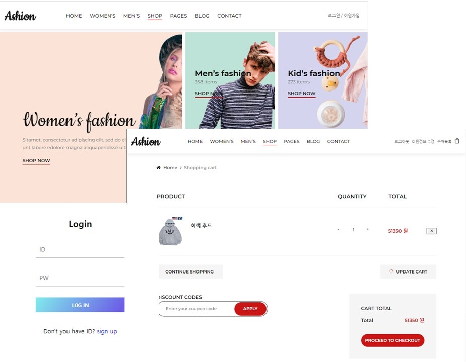

쇼핑몰 DB 프로젝트

DB를 사용하는 쇼핑몰을 목표로 Mysql과 PHP를 사용하여 실제 쇼핑몰과 같은 기능을 사용가능하는 가상 쇼핑몰 홈페이지를 제작하였습니다.
로그인부터 시작하여, 로그인 세션을 이용한 로그인 유지(PHP), 로그인한 회원정보 수정, 상품 목록 및 상품상세열람, 상품 구입, 상품 구입 후 리뷰작성등 관련된 기능을
최대한 구현하기 위해 노력하였습니다. 구현간 PHP, DB를 이용하여 동적으로 웹페이지를 구현하는 경험하며 동적웹페이지의 기본적인 구동원리를 다시 확인하였습니다. 특히
DB 모델 제작간에 최대한 효율적으로 구현하기 위해 많은 시행착오를 겪은 것이 기억에 남는 프로젝트입니다.
주요기능
DB와 연동하여 동적으로 동작하는 쇼핑몰 페이지
Language
HTMl, CSS, PHP, MySql
Environment
Visual Studio Code, Apache, MariaDB
Backgroud
DB, Web Server